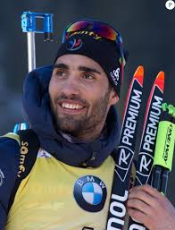

Estoy un estudiante que viene de Francia. Estoy estudiando informatica en una escuela de ingenieria que se llama "ISIS" (Informatica y Sistemas de informacion para la Salud) en una pequena ciuad cerca de Toulouse : Castres.
Tambien practico rugby en Francia y aquí en Guadalajara, y me gusta mucho los videojuegos y la informatica. Estoy estudiando React en mi tiempo libre.
Admiro Martin Fourcade, que practica el biatlón, porque es un muy grande campeon, que se ha ganado todo en su deporte, y que siempre se queda trabajar más para obtenecer sus objetivos. Tambien le admiro porque lucha contra el engaño y el dopaje en deporte.
| Categoria | Tema |
|---|---|
| Rugby | Deporte |
| Rammstein | Musica |
| League of Legends | Videojuegos |